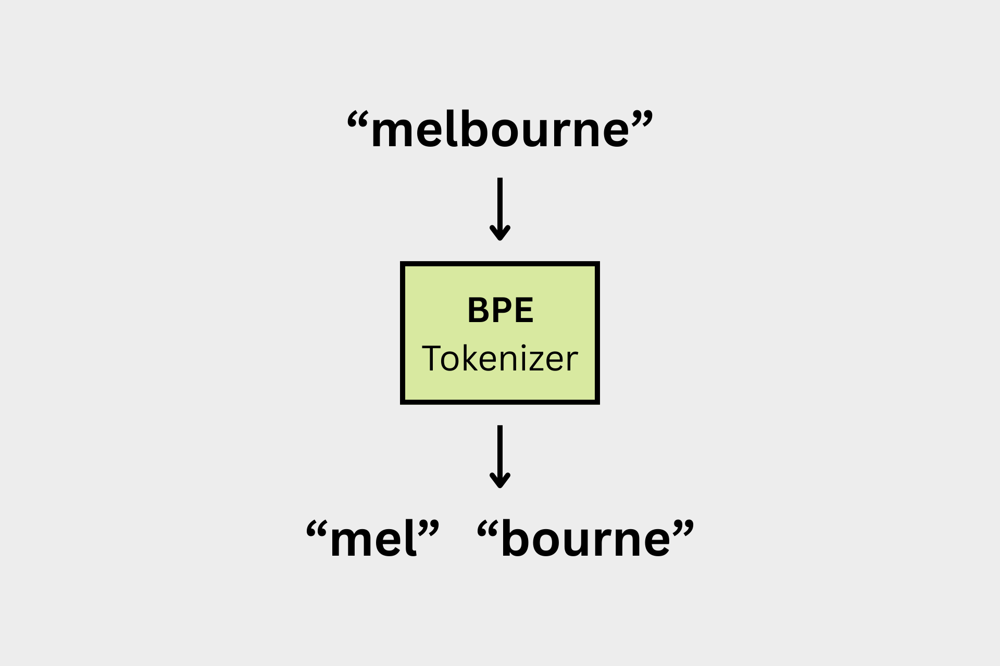

# importing dependencies
from collections import Counter
import numpy as np
import pandas as pd
import reBPE Tokenizer from scratch
Python
NLP

Why Tokenize?
Let’s motivate the need for a tokenizer:
“What is AI and how does it work?”
AI Chatbots are large language models (LLMs). LLMs are language models: they are machine learning models that predict the next word given a sequence of words, and they are large: a lot of parameters (GPT4 had 1.76 trillion). LLMs are trained (i.e. it’s parameters are tuned) on huge amounts of text (often from the internet); the end result is a computer program that represents natural language really well.
“How do we train an LLM?”
To train an LLM, we give the model a sentence from our corpus (i.e. all our training data we scraped from the internet). Starting from the first word, have it predict the next word in the sentence. We calculate how wrong it’s prediction was, based on the difference in meaning between the word it predicted and the actual next word in the sentence. The model learns from it’s mistake, i.e. its parameters are tweaked such that the next time it’s in a similar situation it’ll make a better prediction.
“How does an LLM compare the meaning of words?”
It’s not obvious how a computer could quantifiably represent the meaning of a word, or how it could calculate the difference in meaning between two words. How could numbers tell us “dog” is closer to “puppy” and farther than “god” in meaning? The answer involves a bit of philosophy. The Distributional Hypothesis states a word’s meaning is determined by the contexts its used in, i.e. the other words around it. We know “dog” is close to “puppy” because they are used in similar situations. Here’s one simple way of determining a word’s context: We can determine what “dog” means by looking for the word in our corpus; whenever we see it, we look to it’s left and right and note which words surround it, keeping a tally of the number of times a given word is in the context of “dog”. Thus, we get a list of numbers representing the context “dog” is used in (this list of numbers is called a word embedding).
“Okay, but what counts as a word?”
Very good question! In order to get individual words to train an LLM with, we need to split up raw strings of text into discrete words. In an English sentence each word is generally separated by spaces. But, we often care about sub-word units of text. For example, we might want to learn what the suffix “ology” (as in “Biology”, “Ontology”) means in itself. These sub-word units are called tokens; they can be sequences of characters like with “ology”, or as granular as individual characters (though individual characters would not a good choice of token for most NLP tasks).
Turning a raw string into a list of tokens is called Tokenization, and it’s the first step of training any machine learning model on text. Notice that tokenization requires much more thought than simply splitting words on spaces. Tokenization involves creating a token vocabulary out of our raw text, and splitting up our text string using this vocabulary.
Byte-Pair Encoding
AKA BPE
- Pre-tokenize your sentence(s)
- could be as simple as splitting on spaces, or a more sophisticated rules based approach
- Count frequencies of each pre-token
- e.g. assume after pre-tokenization we get the following words and frequencies
("hug", 10), ("pug", 5), ("pun", 12), ("bun", 4), ("hugs", 5)
- e.g. assume after pre-tokenization we get the following words and frequencies
- Split each word by their characters and compile a set of all unique symbols (symbol vocabulary)
("h" "u" "g", 10), ("p" "u" "g", 5), ("p" "u" "n", 12), ("b" "u" "n", 4), ("h" "u" "g" "s", 5)- symbol vocabulary:
["b", "g", "h", "n", "p", "s", "u"]
- Then count the frequencies of each possible vocabulary pair and pick the one that occurs most frequent. The most frequent pair of symbols is added to the symbol vocabulary.
ugis the most frequent pair. This is the first merge rule.("h" "ug", 10), ("p" "ug", 5), ("p" "u" "n", 12), ("b" "u" "n", 4), ("h" "ug" "s", 5)- symbol vocabulary:
["b", "g", "h", "n", "p", "s", "u", "ug"]
- Continue until you have a desire symbol vocabulary size (hyperparameter)
Because there are a lot of base characters in unicode, our base vocabulary might be very large, which would make iterating through pairs more difficult computationally. We can save on computation by using bytes (e.g. utf-8) as the base vocabulary.
Importing Data
# importing data: using bible corpus
text = pd.read_csv('/kaggle/input/bible/t_asv.csv', usecols=['t'])
# splitting train and test
train = text.iloc[:round(len(text)*0.8)]
test = text.iloc[round(len(text)*0.8):]
print("Train set size:",len(train))
print("Test set size:", len(test))Train set size: 24882
Test set size: 6221BPE Tokenizer Class
class BPETokenizer():
def __init__(self):
self.token2idx = dict()
self.idx2token = dict()
self.pretoken_freq = Counter()
self.token_freq = Counter()
self.pair_freq = None
self.pretoken2token = dict()
# pre_tokenize
# takes text
# inits frequencies of pre_tokenized words, token2idx and idx2token
# training function
# takes text and vocab size
# iteratively creates token pairs based on pair frequency
# tokenizer function
# takes text
# calls pre-tokenizer
# returns tokenized text as list
def pre_tokenize(self, text):
"""
Takes a raw string of text and performs pre-tokenization.
Lowercases, splits on spaces and puntuation.
"""
vocab = set()
pre_tokenized_sentence = list()
#iterate through sentences: clean, split
for sent in text:
sent_str = sent.lower().replace('.', '') #
s = re.split(r'[;:,\s]+', sent_str)
for chars in s:
pre_tokenized_sentence.append(tuple(chars))
self.pretoken_freq.update([tuple(chars)])
vocab.update(chars)
#creating token index
for idx, char in enumerate(vocab):
self.token2idx[char] = idx
#creating reverse index
self.idx2token = {val:key for key, val in self.token2idx.items()}
return pre_tokenized_sentence
def train(self, text, num_tokens):
"""
Takes raw text, pre-tokenizes it, and then performs BPE encoding until vocab size is default characters + num_tokens.
"""
#init token_freq dict and token2idx dict
self.pre_tokenize(text)
self.token_freq = self.pretoken_freq
for _ in range(num_tokens):
# numpy array of size len(token2idx) * len(token2idx), populate cells with tokens from token_freq
self.pair_freq = np.zeros((len(self.token2idx.keys()), len(self.token2idx.keys())))
# populating
for key, value in self.token_freq.items():
key_idx = [self.token2idx.get(k) for k in key]
for i in range(1, len(key_idx)):
self.pair_freq[key_idx[i-1], key_idx[i]] += value #populating cells token_pair cells with pair frequencies
# row and col indices of maximum cell: represents most frequent sequence of tokens, will be combined into one new token
row, col = np.unravel_index(self.pair_freq.argmax(), self.pair_freq.shape)
# combine the most common token pairs into a new token
tok_1 = self.idx2token[row]
tok_2 = self.idx2token[col]
new_token = tok_1 + tok_2
# adding new_token to token2idx and idx2token
self.token2idx[new_token]= max(self.token2idx.values()) + 1
self.idx2token[max(self.idx2token)+1] = new_token
# need to make a copy of the dict because we can't change keys while we iterate through the dict
token_freq_copy = Counter()
#find all keys in token_freq containing the following sequence of components: tok_1, tok_2
#delete both, and replace with new_token where tok_1 was
for tup, val in self.token_freq.items():
new_tup = []
i = 0
while i < len(tup):
# If we find a match for the pair, merge them
if i < len(tup) - 1 and tup[i] == tok_1 and tup[i+1] == tok_2:
new_tup.append(new_token)
i += 2 # Skip both components
else:
new_tup.append(tup[i])
i += 1
token_freq_copy[tuple(new_tup)] = val
self.token_freq = token_freq_copy
# creating pretoken2token dict
self.pretoken2token = {list(self.pretoken_freq.keys())[i] : list(self.token_freq.keys())[i] for i in range(len(self.pretoken_freq))}
return self.token_freq #optional return
def tokenize(self, sent):
"""
Tokenizes sentence based on a token vocabulary learned during training.
Must run `train` method first.
Parameters
----------
sentence : the str to be tokenized
Returns
-------
list : list of tokenized sentence(s)
"""
#handling error: tokenizing without training
if not self.pretoken2token:
raise AttributeError("Must train tokenizer first. Run `train` on training data.")
#sentence needs to be a list
if isinstance(sent, str):
sent = [sent]
# returning list of tuples of tokens
# if word isn't in our tokenizer vocab, just return the untokenized word as is
return [self.pretoken2token.get(tup, tuple([''.join(tup)])) for tup in self.pre_tokenize(sent)]Tests
# tests
tokenizer = BPETokenizer()
test_sentence = test.iloc[0,0]
print("Test sentence:\n", test_sentence, "\n")
freqs = tokenizer.train(train.iloc[:, 0], 3000) #training on entire training set, adding 3000 vocab tokens
tokens = tokenizer.tokenize(test_sentence)
print("Tokenized test sentence:\n", tokens)
assert len(tokens) == 27
assert all(isinstance(i, tuple) for i in tokens)Test sentence:
Now when he was risen early on the first day of the week, he appeared first to Mary Magdalene, from whom he had cast out seven demons.
Tokenized test sentence:
[('now',), ('when',), ('he',), ('was',), ('ris', 'en'), ('early',), ('on',), ('the',), ('first',), ('day',), ('of',), ('the',), ('we', 'ek'), ('he',), ('appeared',), ('first',), ('to',), ('mar', 'y'), ('mag', 'd', 'al', 'ene'), ('from',), ('whom',), ('he',), ('had',), ('cast',), ('out',), ('seven',), ('demon', 's')]